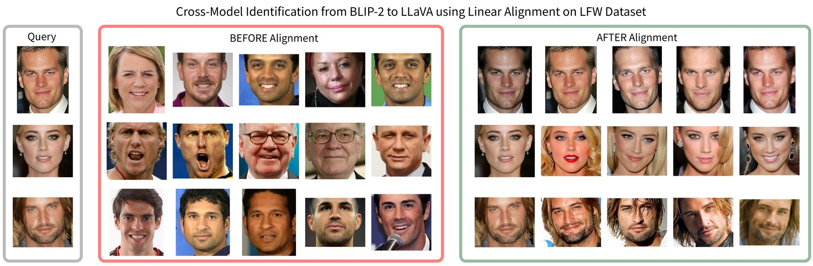
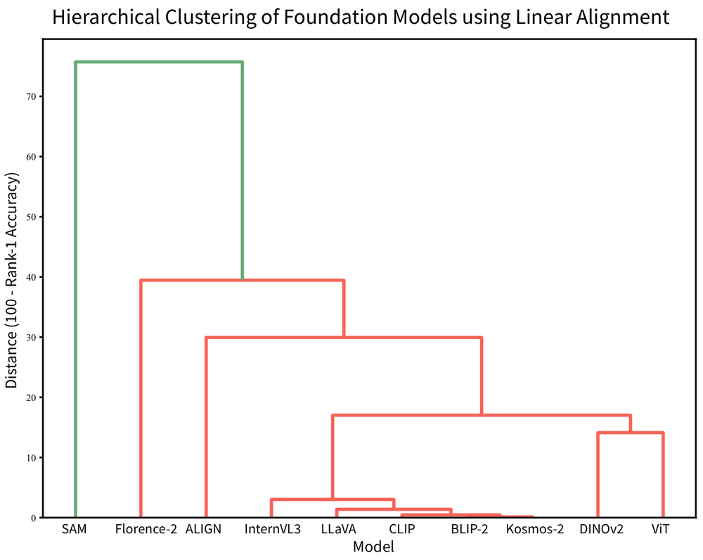
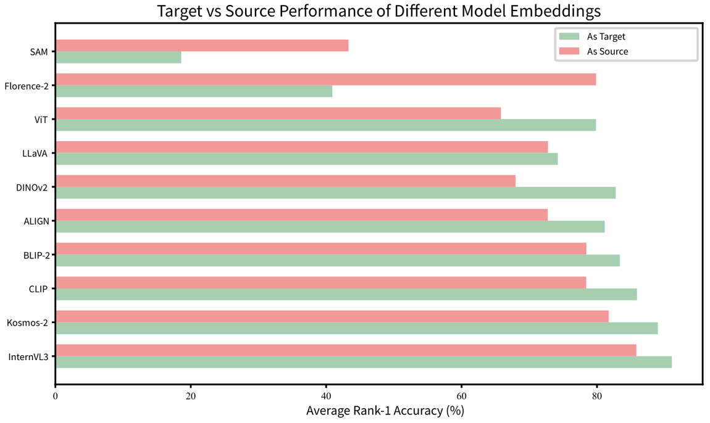
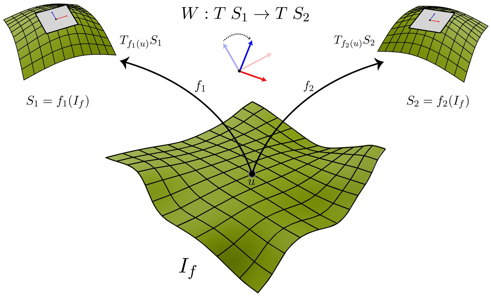

Compatibility of Face Embeddings
|
AbstractAutomated face recognition has advanced rapidly with deep neural network (DNN) models trained for domain-specific tasks. At the same time, large foundation models pretrained on broad vision or vision-language tasks show impressive generalization across domains, including biometrics. This raises a question: do different DNN models, both domain-specific and foundation, encode facial identity in similar ways, despite different datasets, loss functions, and architectures? We directly analyze the geometric structure of the embedding spaces produced by different models. Treating embeddings of face images as point clouds, we study whether simple affine transformations can align the face representations of one model with another. Our findings reveal substantial cross-model compatibility: low-capacity linear mappings substantially improve cross-model face recognition over unaligned baselines for both identification and verification, including across foundation models never trained for face recognition. Alignment patterns generalize across datasets and vary systematically across model families, indicating representational convergence in facial identity encoding. These findings reframe independently trained templates as transferable rather than revocable, with implications for interoperability, ensemble design, and biometric template security. |




BibTeX@inproceedings{rubab2026compatibility,
title = {Compatibility of Face Embeddings Across Deep Neural Networks},
author = {Rubab, Fizza and Tong, Yiying and Ross, Arun},
booktitle = {IEEE/IAPR International Joint Conference on Biometrics (IJCB)},
year = {2026}
}
|
|
This website is licensed under a Creative Commons Attribution 4.0 International License. |